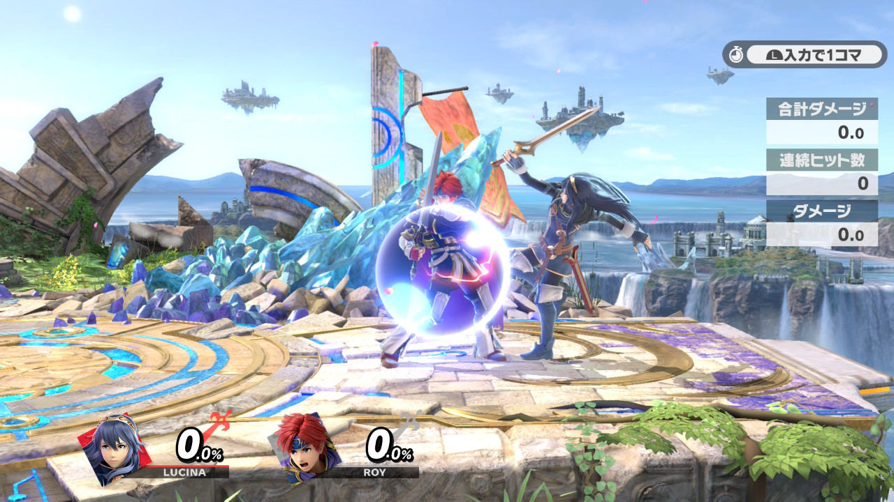

ルキナの特有テクニックを解説していきます。これらのテクニックは、ルキナの戦闘スタイルを支える重要な要素です。
TECH 01
マーベラスコンビネーション（シフト）
横B → スティック入力(上・横・下)
単発の技が多いルキナの唯一の連続攻撃技です。上手く使いこなせるようになるとジャスガされて手も足も出ないことがなくなります。
- 上シフト： 崖端以外で相手に横Bが当たった場合は基本上シフトが強いです。着地狩り展開に持っていけます。また、密着でガードされた場合でもガードをめくるので強いです。反撃されるリスクは少ないです。反応が遅れた相手には無敵を生かした上B暴れも強いです。 
- 横： 最強です。撃墜もできます。また、横→横→下→横にすることで3段目の吹っ飛びが減少され最終段が当てやすくなります。ガードされたとき3段目下シフトで止めると相手のつかみがほぼ間に合いません。
- 下シフト： 3段目下シフトは強いですが最終段は弱いので上か横入力にしましょう。
TECH 02
横B
ジャンプ上り → 横B
ジャンプ上りなどで横Bを入れると慣性がなくなります。これにより、ジャンプ上りでの最終着地場所を狙っていた相手を翻弄することができます。空前や空後など技を振ると慣性が戻ります。
空中 → 横B
崖外でタイミングをずらすときなどに横Bは強いです。空前や空後など技を振ると慣性が戻ります